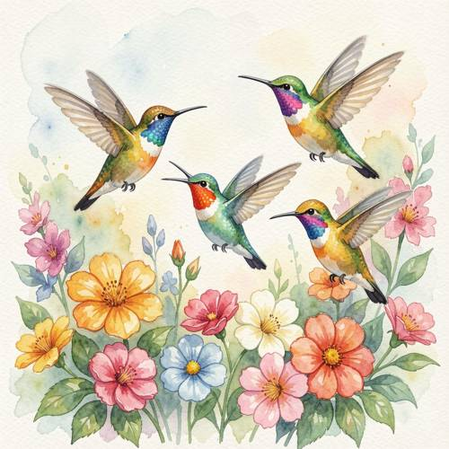
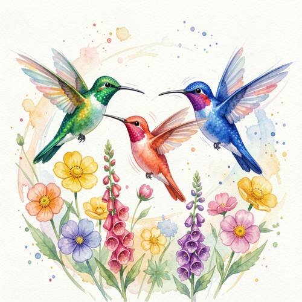

Attribute — A beautiful watercolor painting depicts three colorful hummingbirds ho
A beautiful watercolor painting depicts three colorful hummingbirds hovering among the flowers, their wings vibrating at high speed, and the picture is full of movement.

Direct — one call, no iteration

Continuum — Qwen3.8-27B + FLUX.2-klein-9B
Judge — Direct
FAILAttribute - Quantity — The image depicts four colorful hummingbirds hovering above a patch of flowers. The prompt specified exactly three hummingbirds.
PASSStyle — The image is rendered in a style that mimics a watercolor painting. This is evident from the soft, blended colors, the characteristic wash effects in the background, and the light, transparent appearance of the pigments on a textured paper-like surface.
Judge — Continuum
PASSAttribute - Quantity — The image contains exactly three hummingbirds. One on the left is primarily green, one in the center is reddish-orange, and one on the right is blue. All three are colorful.
PASSStyle — The image is rendered in a watercolor style, evident from the soft, blended colors, visible paint splatters, translucent washes, and the texture of the paper background.
What the agent did
Thinking
I need to investigate this further. Let me check the details. The user wants a watercolor painting of three colorful hummingbirds hovering among flowers, with their wings in motion (wings blurred from high-speed vibration), full of movement. Following the benchmark policy: use flux2-klein for generation and editing. Omit steps/guidance. Generate, inspect, edit, and mark the best. Let's generate the image.
Step 1 — `generate_image`
{
"prompt": "A beautiful watercolor painting of three colorful hummingbirds \u2014 one iridescent emerald green, one coral magenta, one royal blue \u2014 hovering among blooming flowers (buttercups, foxgloves, wildflowers) with soft washes of color, loose expressive brushstrokes, wet-on-wet watercolor bleeding, visible white paper texture. The hummingbirds' wings are rendered as translucent motion-blurred shimmering streaks of color to convey high-speed vibration, with faint blur arcs around their beaks and bodies. The whole composition is dynamic and full of movement: swirling watercolor strokes, splattered pigment, flowing stems and fluttering petals, a sense of gentle breeze and life. Traditional loose watercolor style, bright saturated palette, elegant and lively.",
"width": 1024,
"height": 1024,
"model": "flux2-klein"
}
Result img_0
Thinking
The image turned out really well. Three colorful hummingbirds (green, coral/orange, and blue) hovering among the flowers, with motion-blurred wings, in a watercolor style full of movement. Let me inspect the details to verify quality—maybe I'll check the birds' wings and overall composition. The prompt requirements are: 1. Beautiful watercolor painting ✓ 2. Three colorful hummingbirds ✓ 3. Hovering among flowers ✓ 4. Wings vibrating at high speed (motion blur) ✓ 5. Full of movement ✓ To make sure the hummingbirds aren't garbled, let me zoom in on a few areas to check. I'll check the heads/beaks and the wings.
Model
The first generation looks strong. Let me zoom in on the birds to check for any artifacts before deciding.
In the close-up, the hummingbirds are very clean and well-executed: - The coral-colored hummingbird has good motion-blurred wing arcs and a well-formed beak - The green hummingbird is beautifully rendered, with translucent, motion-blurred wings conveying high-speed flapping, and the beak and eye are fine as well Everything matches the prompt: 1. ✓ Beautiful watercolor painting 2. ✓ Three colorful hummingbirds (emerald green, coral orange, royal blue) 3. ✓ Hovering among the flowers 4. ✓ Wings blurred by high-speed flapping 5. ✓ A sense of motion (swirling washes of paint, splatters, flowing brushstrokes) This is a really good result. I'll mark it as the best and stop—since it's already good enough, no further editing is needed.
Model
In the close-up, both birds are cleanly drawn — the beaks, eyes, and translucent motion-blurred wing arcs are rendered crisply, effectively conveying the high-speed vibration. The composition meets all the elements of the prompt: three colorful hummingbirds (emerald, coral, blue) hovering among the blooming flowers, wings with motion blur, and a lively, full-of-motion watercolor style with splatters and swirling brushstrokes. This is a result I'm confident submitting.
Step 4 — `mark_best`
{
"image": "img_0",
"reason": "Watercolor painting with three colorful hummingbirds (green, coral, blue) hovering among flowers; wings rendered as motion-blurred translucent streaks showing high-speed vibration; overall composition is dynamic and full of movement. All prompt elements verified by zoomed inspection."
}
Thinking
The image is marked as the best, and since it's complete, no further editing is needed. I'll present the final summary to the user.
Model
The painting is complete and marked as the final result. It shows: - **Three colorful hummingbirds** — emerald green, coral-orange, and royal blue with a magenta throat — each rendered with a distinct iridescent palette - **Hovering among the flowers** — surrounded by buttercups, foxgloves, poppies, and wildflowers in soft watercolor washes - **Wings vibrating at high speed** — the wings are painted as translucent, motion-blurred streaks with faint shimmer arcs, capturing that staccato hummingbird hover - **Full of movement** — swirling washes, pigment splatters, flowing stems, and expressive brushwork give the whole piece a lively, breezy energy in a traditional loose watercolor style I verified the details with zoomed crops — the beaks, eyes, and wing-blur effects are all crisp and clean — so I'm stopping here rather than risking a good result with unnecessary edits.